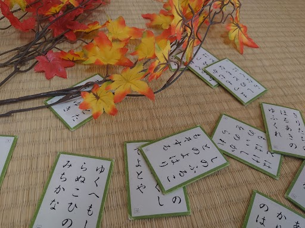

みんな知らないかるたの世界
かるたは地味ながらも広く国民になじんでおり、かるたを知らない人はほとんどいません。
ですが、深く知っている人もあまりいません。実はかるたにも様々な種類があり、どれもとても楽しいです。
このページでは、かるたの種類や、歴史、更には競技かるたについて紹介します。
ぜひこの機会に、かるたの面白さを知って、かるたに興味をもってみてはいかがでしょうか。

かるたは地味ながらも広く国民になじんでおり、かるたを知らない人はほとんどいません。
ですが、深く知っている人もあまりいません。実はかるたにも様々な種類があり、どれもとても楽しいです。
このページでは、かるたの種類や、歴史、更には競技かるたについて紹介します。
ぜひこの機会に、かるたの面白さを知って、かるたに興味をもってみてはいかがでしょうか。
それぞれのページに載っている内容です